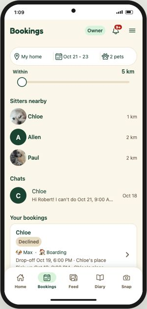
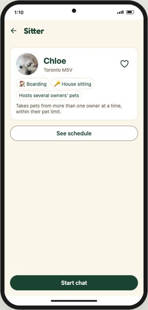
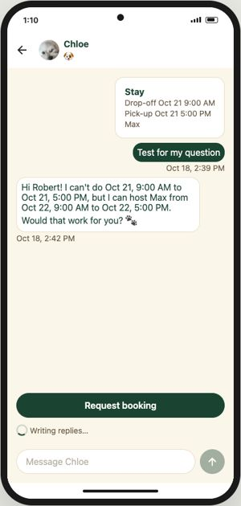
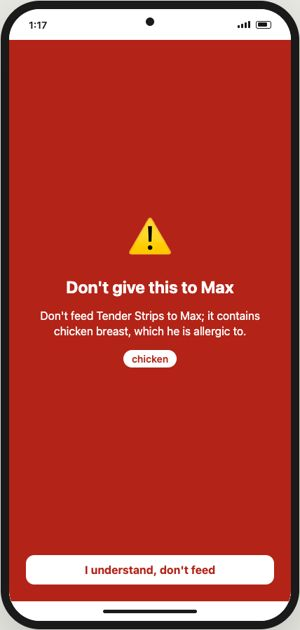

Show Goldito in three minutes
The live app for search, chat and the treat check; the design Draft for care and the ride home, because the demo accounts have no stay running today.
“Goldito runs a whole pet-sitting stay in one app. An AI agent on NVIDIA Nemotron answers, plans and writes, so the sitter can just care, and the owner never has to ask.”
Ten minutes before
- Open goldito-petcare.vercel.app and run one treat check. The server sleeps on the free plan; the first call can take 30 to 50 s.
- Tab 1: Try demo → Owner (Robert). On a computer it runs in a phone frame; click = tap.
- Tab 2: the Draft at ④ Care in progress, for the part the demo data can't show.
- Zoom the browser so the phone fills the shared window; hide bookmarks and other tabs.
The path
The problem
Sitter apps connect people, but the stay itself, replies, house rules, daily notes, is still typed by hand. We've done dozens of stays; Goldito's AI does the typing and people approve.

① Find a sitter Live
Bookings tab. Point at the search line: home, Oct 21 to 23, 2 pets, within 5 km.
Only sitters free for the whole stay show up, favorites first.

Chloe's profile and schedule Live
Tap Chloe → See schedule → tap a day → back.
Big pages instead of gestures: we design for older owners and sitters too.

One chat per owner and sitter Live Chips can take a few seconds
Back → Start chat (or the Chloe row under Chats). Wait for “Writing replies…” to turn into chips; tap one to fill the box. Don't press Send.
The stay is pinned on top. Nemotron drafts the reply in your own voice, but nothing is sent until you press Send. Prices and dates come from our server, never from the model, and every amount in a draft is checked against the quote.
④ Care and ⑤ the ride home Design Draft
Tab 2: ④ Care (checklist, check-ins, the evening daily note), then stage ⑤ (home safe, review, Life Record).
During the stay the sitter just taps: meals, walks, photos. In the evening Nemotron turns those taps into a warm daily note she approves. When the pets are home safe, it writes their Life Record, so the next sitter, even a new one, starts informed.
Say it plainly if asked: this part runs in the app; today's demo accounts just don't have a stay in progress.

Treat check Live 10 to 20 s
Tab 1 → Snap → Treat check → Max → Snap a label → sample Chicken jerky → Check for Max.
Max is allergic to chicken. A vision model reads the label, Nemotron Ultra reasons over the ingredients, our rule table and trusted vet pages, and danger is loud: only “I understand” closes it.
Close
Every AI call runs on Nebius Token Factory, from our backend only. The agent drafts; a person approves anything that reaches the other side.
If they ask
Which models
- Replies and drafts:
Nemotron-3-Nano-30B, about 3 s. - Checklists, daily notes, Life Records:
nemotron-3-super-120b. - Treat check reasoning:
Nemotron-3-Ultra-550b, safety first. - Photos:
MiniCPM-V-4.5; search:Qwen3-Embedding-8Bin pgvector.
Privacy
- Entry codes open 2 hours before a visit and never enter a prompt.
- Location is shared only while moving; no route history.
- Demo people, pets and addresses are fictional; real messages used for tone are anonymized.
What's next
- Booking steps as cards in the chat (quote, Meet & Greet, pay).
- A pet profile from a photo, your voice and big one-question screens.
- An 8-bit pet on Home that the sitter's care keeps happy.
Avoid live
- Request booking and Send: they write to the shared demo data.
- Feed and Diary: empty today.
- The Bookings list below Chats: old test bookings.